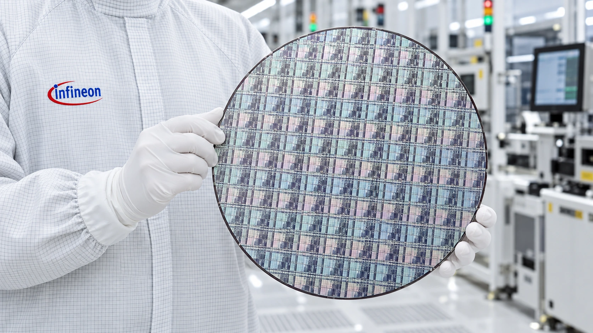

Infineon Plans €1.1 Billion Austrian Expansion for Chips That Power AI Data Centers
The Villach project targets 300-millimeter gallium nitride wafers, with production scheduled for late 2027 and investment extending through 2034.

Infineon plans to invest around €1.1 billion in its Villach site in Austria through 2034, expanding production of gallium nitride power semiconductors on 300-millimeter wafers. The company announced Tuesday that production is scheduled to begin by the end of 2027. The investment targets the electrical infrastructure behind AI data centers, alongside markets such as energy systems, electric mobility and robotics.
The project will use existing cleanroom capacity and upgraded infrastructure. Infineon describes it as the world's first high-volume facility for this next generation of 300-millimeter GaN power chips. That is the company's characterization of a planned manufacturing capability, rather than independent evidence that the new production line is already operating at commercial scale.
Reuters separately reported the investment announcement. The distinction from an AI processor factory is central to understanding it. These components handle power conversion, rather than running a language model or replacing the accelerator doing the computation. Our coverage of data-center electricity demand explains why the equipment delivering electricity has become part of the AI expansion story.
A larger wafer changes manufacturing economics
Infineon says a 300-millimeter wafer can yield 2.3 times as many chips as a 200-millimeter wafer. It also says the European Commission approved €319 million in state aid, with Austria's formal funding commitment still expected within the required time limits. The proposed support and the multi-year investment should not be mistaken for the same money arriving immediately.
Moving to a larger wafer gives a manufacturer more surface area on which to produce devices. The commercial benefit depends on how many of those devices meet specification, how reliably the process runs and how much equipment time each usable chip requires. More chip positions per wafer do not automatically translate into the same percentage reduction in the customer's final component price.
That makes the transfer from a technical demonstration to repeatable volume production a substantive step. A manufacturer needs predictable quality across many wafers, not just a working example. Our guide to AI chip bottlenecks considers how constraints at different production stages can determine the availability of a finished system, even when one part of the chain expands.
Power conversion has its own design constraints
Infineon's technical overview explains why gallium nitride attracts interest: fast switching and low switching losses can enable more compact power electronics. Higher switching frequencies can reduce the size of some surrounding components. For a data-center designer, the objective is an efficient power supply that can fit the available space and manage heat while supplying the computing equipment reliably.
The same overview acknowledges manufacturing complexity, cost, integration and reliability as adoption challenges. Switching from a silicon device to GaN can require changes to the circuit design. The surrounding layout and gate-driving arrangements matter, so an improved transistor is not a guarantee that an unchanged power supply will deliver the technology's potential benefits.
This is why a component efficiency claim should not be presented as an equivalent reduction in a whole data center's electricity bill. Computing, networking, cooling and other electrical stages still consume energy. A saving at one conversion stage can be valuable, but its contribution to the total depends on the system and workload. Tuesday's announcement provides no measured facility-wide saving for a customer deployment.
The spending timetable matters to the AI investment case
The end-2027 production target and spending through 2034 describe different milestones. Starting a line is the beginning of a manufacturing ramp, while a longer investment program can support further equipment and capacity. Neither date establishes a customer order book, an annual revenue contribution or an immediate return on the full announced investment.
For investors following Infineon on Xetra under IFX, useful subsequent evidence will include production qualification, customer adoption, utilization and the cost of manufacturing saleable devices. Our analysis of AI inference economics explains why operating costs matter alongside computing performance. Power-semiconductor expansion addresses one part of that cost structure, with its value ultimately determined by working products and sustained demand.
Sources and methodology
Sources checked October 27, 2026. Company statements, reported findings and forecasts are attributed in the text. Financial and operational implications are editorial analysis.